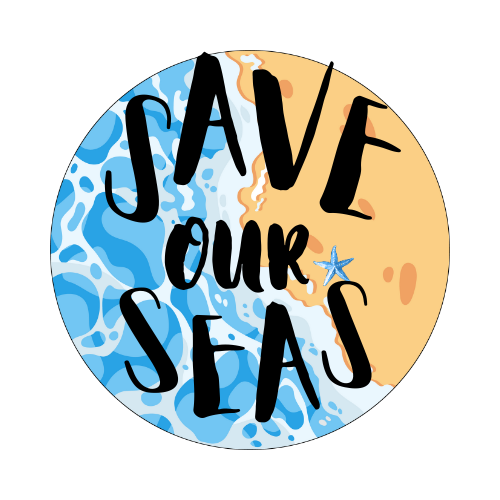

Tujuan membuat web ini adalah untuk memberikan informasi tentang SDGs dan pentingnya menjaga lingkungan. Web ini juga bertujuan untuk menumbuhkan kesadaran dan kepedulian masyarakat agar lebih peduli terhadap laut, pantai, dan ekosistem lainnya. Selain itu, web ini ingin menginspirasi orang untuk melakukan tindakan nyata, seperti menjaga kebersihan dan ikut berkontribusi melestarikan lingkungan demi kebaikan bersama.
